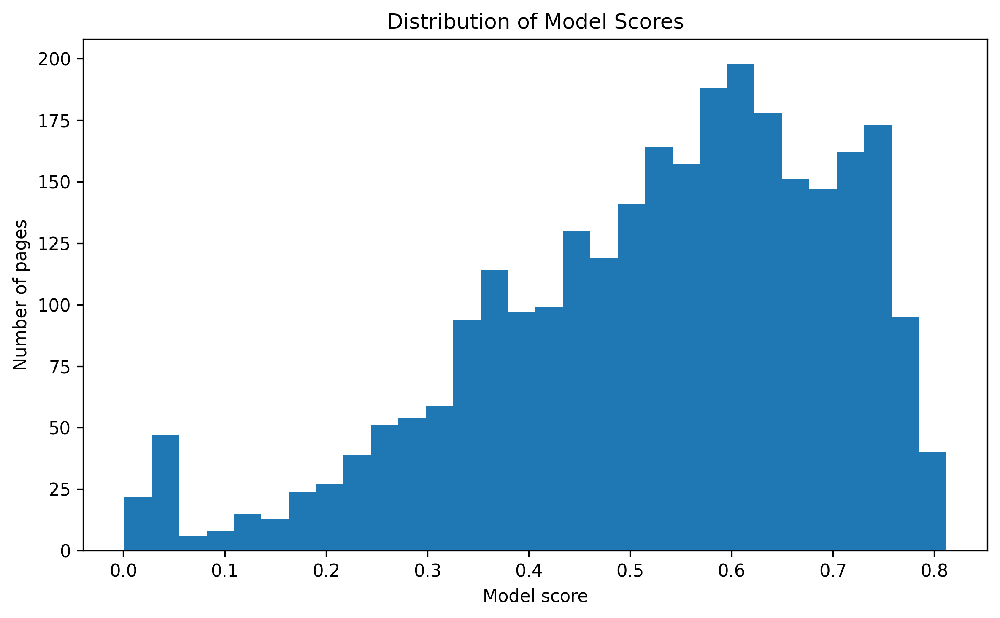
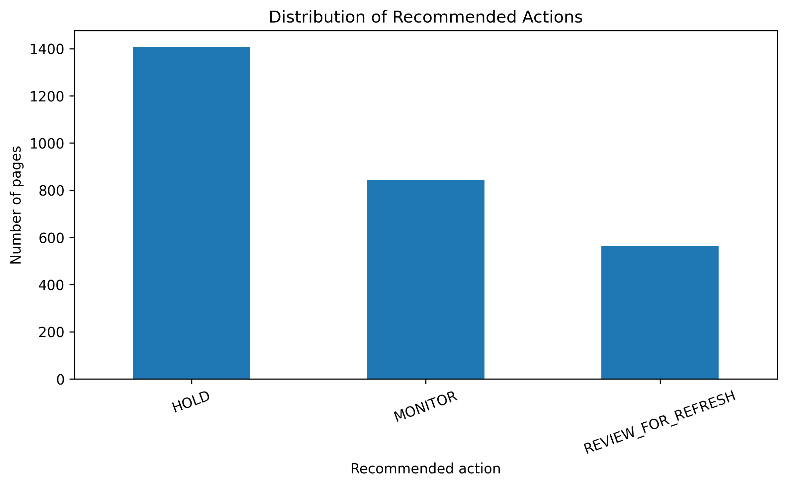

Content Refresh Opportunity Prioritization Using Machine Learning
A decision-support ranking system that combines observable search-performance, content-age, and engagement signals to help editors decide which pages deserve attention first.
This study investigates whether a machine-learning ranking model can help prioritize content pages associated with an observed decline signal for human content review. The analysis uses an anonymized content-refresh dataset containing 22,301 page-level observations available for validation and seven measurable features covering search performance, content age, and engagement signals. A Random Forest classifier is trained using a client-grouped holdout with 25 training clients and 7 test clients, with zero client overlap, and is compared with the Week-4 baseline using Precision@50. On the evaluated holdout, the Random Forest achieved a Precision@50 of 0.84 compared with 0.70 for the baseline, providing directional evidence that combining multiple page-level signals can improve prioritization of pages matching the observed decline proxy. The resulting ranked action queue is intended to support human editorial review by identifying which pages should receive attention first, rather than automatically determining that a page requires a refresh or that a refresh will improve performance.
Problem framing
Which pages should an editor look at first?
The operational question is not “which page will definitely decline?” It is “which pages should an editor look at first for a possible content refresh?”
Content teams can have many pages to review, but limited editorial time and resources. Reviewing every page equally makes it difficult to identify which pages should receive attention first.
This project asks whether observable search-performance, content-age, and engagement signals can be combined to rank content pages associated with an observed decline signal. The decision supported is therefore which pages an editor should review first, rather than whether a page should automatically be refreshed.
The unit of analysis is an individual content-page observation. The output is a machine-learning score and ranked action queue, with higher-scoring pages receiving higher review priority.
The cost of a wrong call works in both directions: prioritizing a low-value page can waste limited editorial resources, while failing to prioritize a useful opportunity can delay potential content improvements. Machine learning helps by combining 7 observable page-level signals into a consistent ranking score rather than relying on a single performance metric.
Data & safety
Observable inputs and leakage controls
The model works with observable search-performance, engagement, content-age, and content-related signals. The analysis uses the anonymized FlyRank content-refresh dataset provided for the internship capstone: data/raw/content_refresh_anonymized.csv.
The analysis contains 22,301 page-level observations available for validation.
Final model features
impressions_90dObserved search impressions over the 90-day window.
sessions_90dObserved sessions over the 90-day window.
content_age_daysAge of the content item in days.
ctrObserved click-through rate.
avg_positionAverage observed search position.
word_countObserved content length.
engagement_rateObserved engagement rate.
Leakage control
trend_direction and trend_pct are excluded because trend_direction is used to derive the target label. Including these fields would leak information about the observed decline signal into the model.
client_id is retained only for client-grouped train/test splitting and leakage checks. It is never used as a predictive feature. content_id is retained only to identify observations in the ranked output.
Baseline
A transparent CTR-position opportunity benchmark
The baseline is a transparent CTR-position opportunity score developed in Week 4. It prioritizes pages with meaningful search exposure whose observed CTR is below the typical CTR for pages in a similar average-position bucket.
Pages are divided into Top 3 (0–3), Page 1 (3–10), Page 2 (10–20), and Deep (>20). For each bucket, expected CTR is the median CTR of training pages in that bucket.
The baseline and Random Forest are evaluated on the same client-grouped held-out test set using Precision@50. Expected CTR values are calculated from training data only.
Model / analysis
Random Forest ranking using seven observable signals
The method is a Random Forest classifier, selected for Lane 2: Refresh / Content Opportunity Scoring. The objective is to combine multiple observable page-level signals into a ranking score for human review.
A Random Forest fits this lane because the available signals can interact in non-linear ways. The model can combine impressions, sessions, CTR, average position, content age, word count, and engagement into a probability score.
Target / proxy
The target is is_declining_label = 1 when trend_direction is "down", and 0 otherwise, representing an observed decline state rather than a guaranteed future decline.
Validation and training
The model uses a client-grouped train/test split. The validation audit confirmed 25 training clients and 7 test clients, with zero client overlap. Missing numeric values are filled using training-set medians only.
Random Forest configuration: n_estimators=200, max_depth=12, min_samples_leaf=5, class_weight="balanced", random_state=42, n_jobs=-1.
Evaluation
Held-out client-grouped validation with Precision@50
The available validation data contains 22,301 page-level observations. The split contains 25 clients in training and 7 clients in the held-out test set, with zero client overlap. The split uses random_state=42.
Primary metric
Precision@50 is used because the intended use is a ranked review queue where editorial capacity may be limited.
| Method | Precision@50 | Positive pages in top 50 |
|---|---|---|
| Week-4 baseline | 0.70 | 35 / 50 |
| Random Forest | 0.84 | 42 / 50 |
The Random Forest shows an absolute improvement of 0.14 Precision@50, corresponding to 7 additional matching pages among the top 50.
Interpretation
What the ranking signal shows — and what it does not
What the model found
The Random Forest indicates that the observed decline proxy is associated with a combination of page-level search, content, and engagement signals, rather than a single measurable factor.
Feature importance should be interpreted as model reliance, not causation. A high importance value does not mean that changing that feature will cause a page to decline or recover.
Relationship to the baseline
The improvement from 0.70 to 0.84 Precision@50 suggests that the additional observable signals contain useful information for ranking pages that match the observed decline proxy.
Error patterns
The model still produces both false positives and false negatives. The ranking signal is useful but imperfect. A high model score should trigger editorial investigation rather than automatically trigger a refresh.
What the analysis does not show
- Any individual feature causes content decline.
- A page with a high score is guaranteed to decline.
- Refreshing a highly ranked page will improve its performance.
- The model will perform identically for unseen clients outside this evaluation.
- The model has learned or predicted Google's ranking algorithm.
Recommendation
Turn model scores into a human-in-the-loop editorial workflow
Ranked review queue
The Random Forest produces a ranked review queue based on model score. Higher-ranked observations receive greater review priority, but the ranking does not guarantee that a page requires a refresh.

Model score distribution

Action playbook
| Recommended action | Pages | Share |
|---|---|---|
| HOLD | 1,406 | 50.0% |
| MONITOR | 844 | 30.0% |
| REVIEW_FOR_REFRESH | 562 | 20.0% |

Editorial workflow
- Start with the highest-ranked pages.
- Inspect the reason code.
- Validate editorial context including search intent, content quality, seasonality and relevance.
- Decide the action using human judgment.
- Track decisions and outcomes for future evaluation.
Reproducibility
Run the analysis from the repository with a fixed split and configuration
The complete analysis can be re-run from a fresh clone of the project repository.
git clone https://github.com/Anshikaag-28/Anshika-FlyRank-ML.git cd Anshika-FlyRank-ML pip install pandas numpy scikit-learn matplotlib seaborn jupyter
Main analysis: work/notebooks/capstone.ipynb
Dataset: data/raw/content_refresh_anonymized.csv
Action queue: work/capstone_outputs/action_playbook_queue.csv
Figures: work/figures/top50_model_ranking.png, work/figures/model_score_distribution.png, work/figures/action_distribution.png
The client-grouped split uses random_state=42. The final evaluation contains 25 training clients and 7 held-out test clients with zero overlap. The Random Forest uses n_estimators=200, max_depth=12, min_samples_leaf=5, class_weight="balanced", random_state=42, and n_jobs=-1.
The project does not claim a permanently sealed or independently audited benchmark. Results should be interpreted as evidence from the specified held-out client evaluation.
Acknowledgments & data credit
Dataset attribution and claims checklist
This work was Built on the FlyRank ML Internship dataset. The dataset was used for educational and research-oriented analysis of content-refresh prioritization, with results presented in an anonymized and public-safe form.
- Claims are framed as observed, measured, directional, or decision-support.
- Precision@50 is reported without inventing an unverified base-rate number.
- No causal claims are made without an experiment or causal design.
- The paper does not claim to have predicted Google's algorithm.
- No client names, domains, private URLs, private search queries, credentials, or client-identifying information are included.
- All reported numbers should match the fresh rerun before submission.
- The Random Forest result is directional evidence from the held-out client-grouped evaluation.
- The model is decision support for human editorial prioritization, not an automatic instruction to refresh content.